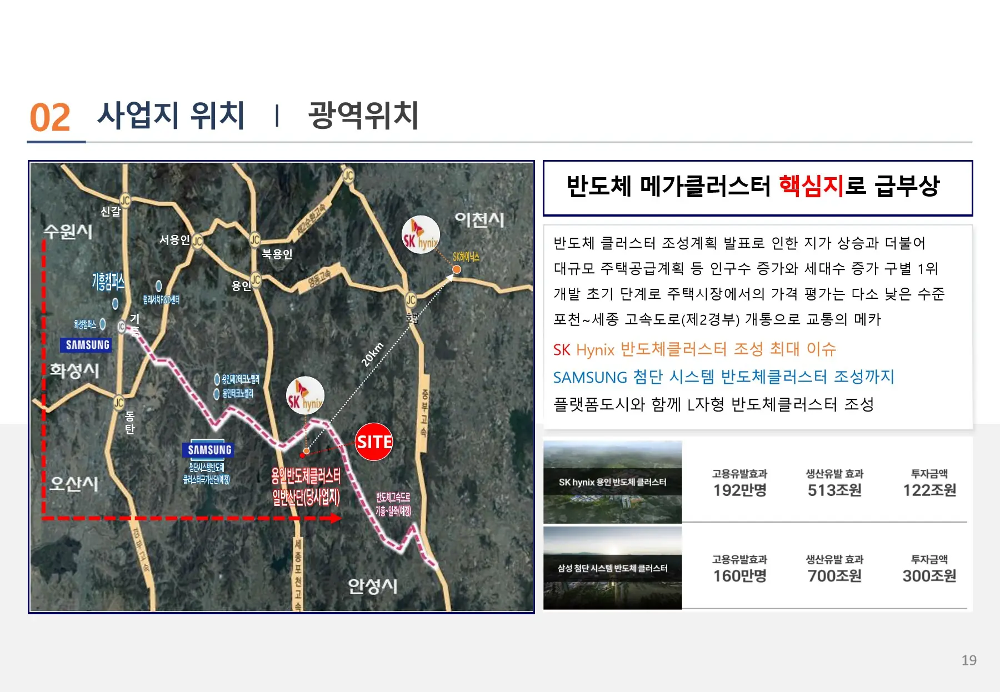
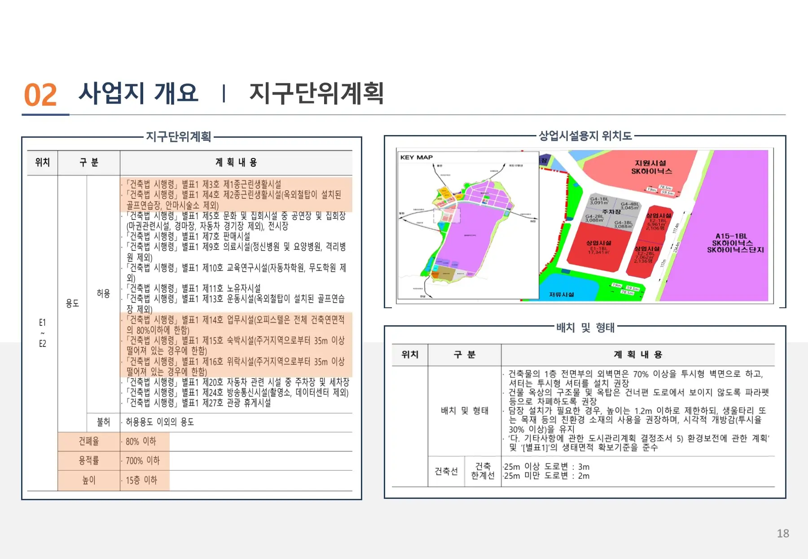
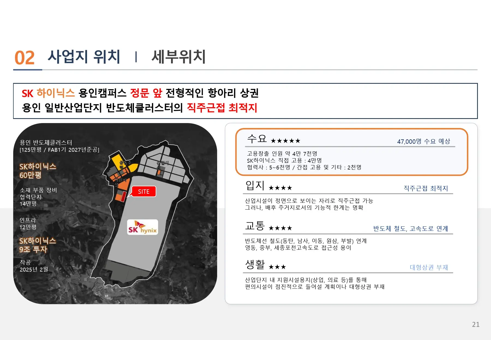
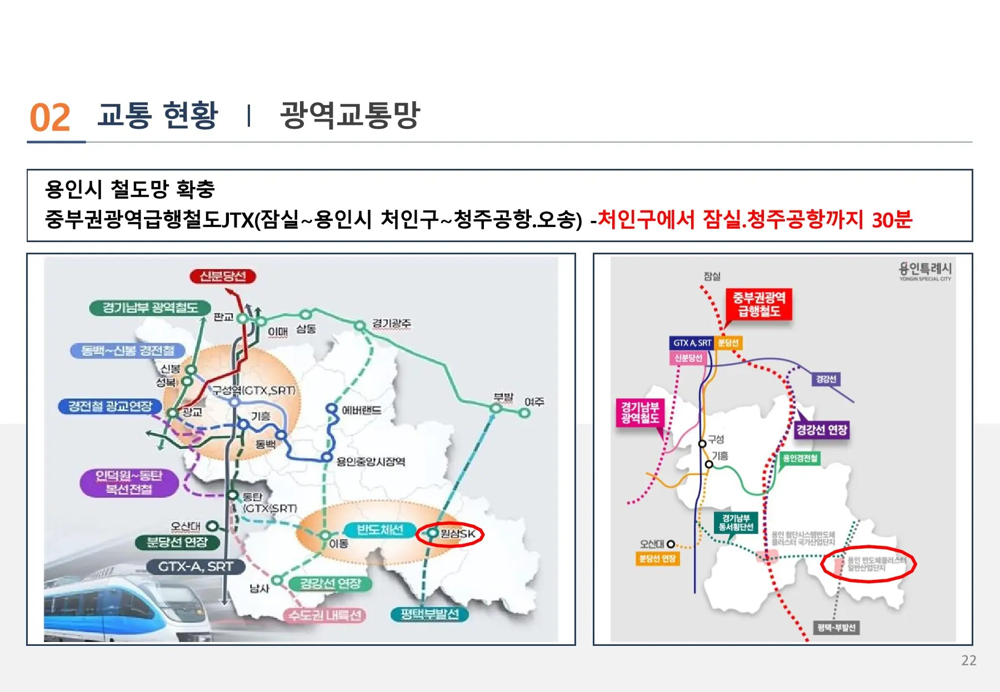
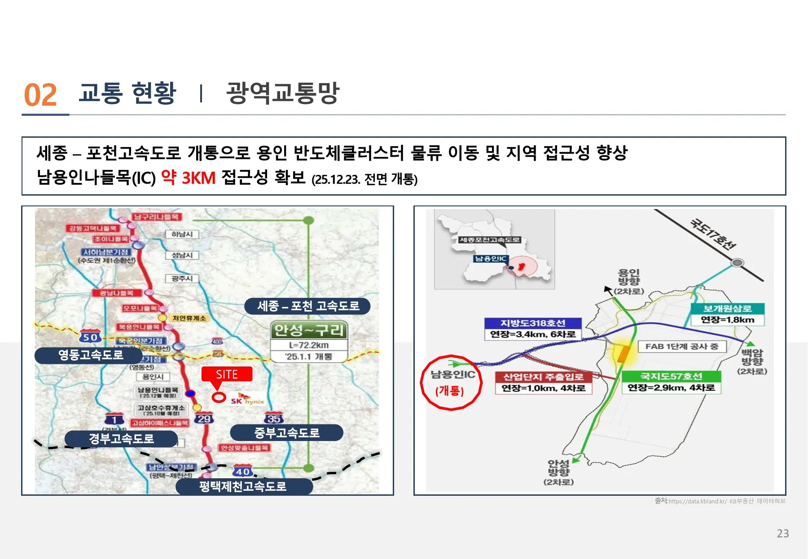

광역 위치도
용인·이천·동탄·기흥을 잇는 반도체 메가클러스터 안에서 원삼 일반산업단지의 광역 위치를 확인하는 사업계획서 기준 자료입니다.

사업계획서 기준 입지자료를 바탕으로 용인 반도체클러스터, 산업단지 접근성, E2-1 BL의 위치 관계를 정리한 참고 리포트입니다.
원삼 센트레빌 퍼스트원(가칭) 사업지인 E2-1·E2-2 상업시설용지는 사업계획서 기준 용인 반도체클러스터 일반산업단지 안에 계획돼 있습니다. 아래 자료는 광역권, 지구단위계획, 세부 사업지, 철도망, 고속도로·IC 순서로 위치 관계를 확인하도록 구성했습니다. 광역 위치도는 용인·이천·동탄·기흥을 잇는 자료입니다.
용인·이천·동탄·기흥을 잇는 반도체 메가클러스터 안에서 원삼 일반산업단지의 광역 위치를 확인하는 사업계획서 기준 자료입니다.

용인 반도체클러스터 일반산업단지 지구단위계획과 E2-1·E2-2 상업시설용지 위치를 확인하는 사업계획서 기준 자료입니다.

SK하이닉스 용인캠퍼스 정문 앞 입지 조건과 수요·입지·교통·생활 항목별 검토 내용을 정리한 사업계획서 기준 자료입니다.

중부권광역급행철도(JTX), 반도체선 등 용인시 철도망 확충 계획을 기준으로 접근성을 검토합니다.

세종-포천고속도로 개통과 남용인IC 접근성을 기준으로 산업단지 진입 동선을 검토합니다.

※ FAB·기숙사·E2-1 관계도는 현재 확보된 사업계획서 발췌자료에 포함되어 있지 않아 게재하지 않았습니다. 확정 자료가 확보되는 대로 반영합니다.
원삼 센트레빌 퍼스트원(가칭) 산업단지 상업용지는 전체 상업용지비율 약 0.75%, 당 사업지 E2-1·E2-2 비율 약 0.34%를 기준으로 봅니다. 타 산업단지·택지지구 대비 낮은 상업용지 비율과 근린생활시설 배후수요를 검토하며, 1인당 상업용지 0.24평은 근린생활시설 배후수요 검토용 참고자료입니다.
전체 산업단지 내 상업용지비율 참고값
당 사업지 관련 상업용지 비율 참고값
근린생활시설 배후수요 검토용 참고자료
근린시설 시세는 상담 시 최신 자료 기준으로 확인
입지 리포트는 사업지를 용인 반도체클러스터 일반산업단지 안의 상업시설용지 E2-1·E2-2로 둡니다. 주소 안내는 경기도 용인시 처인구 원삼면 죽능리입니다. 광역 위치, 지구단위 위치, 세부 위치, 철도망, 고속도로·IC 그림은 사업계획서 발췌로 붙어 있고, 그 그림이 곧 소요시간의 확정은 아닙니다. 분 단위 거리는 이 페이지가 새로 만들지 않습니다.
상업용지 약 0.75%는 산업단지 전체의 참고 비율이고, 약 0.34%는 당 사업지 E2-1·E2-2에 대한 참고 비율입니다. 1인당 상업용지 0.24평은 근린생활시설 배후를 검토할 때의 참고자료입니다. 이 셋은 가격이나 공급 실수가 아닙니다. 비율이 낮아 보인다는 서술도 타 단지와의 우열을 확정하는 문장이 아니라, 배후를 같이 보라는 검토 틀입니다.
리포트의 숫자는 위치와 상업용지 비율이고, 상품 페이지의 숫자는 층과 호수, 주차 계획입니다. 근린은 162호·지하 1층~지상 3층, 주차는 블록당 1,374대(법정 대비 약 110%, 계획)입니다. 타입 A~F는 구성 예정이고 면적은 공고 뒤입니다. 시행 주체는 홈 개요의 ㈜대흥도시개발입니다. 상태는 (분양) 재가동 예정이며, 최신 대조는 1833-3872입니다. 현장분석 페이지는 개발 현황과 공급 시차를 영상·첨부로 다루므로, 이 리포트의 위치도와 역할을 겹쳐 읽지 않습니다.
용인 반도체클러스터 일반산업단지 안의 상업시설용지이고, 주소 안내는 원삼면 죽능리입니다.
아닙니다. 약 0.75%, 약 0.34%, 1인당 0.24평은 배후 검토용 참고이고 분양 조건이 아닙니다.
이 리포트는 분 단위를 적지 않습니다. 도로·IC 그림은 발췌이고, 소요시간은 자료가 확정되기 전에 만들지 않습니다.
대표번호 1833-3872입니다. 지역 서술은 이 리포트가 맡고, 상담 접수의 다른 안내는 홈과 상담 페이지에 있습니다.
| 항목 | 내용 | 상태 | 출처 | 기준일 |
|---|---|---|---|---|
| 용지 | 일반산업단지 상업시설용지 E2-1·E2-2 | 계획 | 사업계획서 발췌 | 2026-10-29 |
| 위치 | 용인시 처인구 원삼면 죽능리 | 계획 | 이 사이트 화면 | 2026-10-29 |
| 상업용지 비율 | 전체 약 0.75%, 사업지 약 0.34%, 1인당 0.24평 | 계획 | 이 페이지 화면 | 2026-10-29 |
| 소요시간 | 미기재 | 분양공고 후 확정 | 이 페이지에는 없음 | 2026-10-29 |
확정된 것과 아직 정해지지 않은 것. 블록 이름과 죽능리, 화면에 있는 비율 참고는 발췌로 확인할 수 있습니다. 분 단위 거리, 가격, 공급 실수는 이 리포트가 정하지 않습니다.
사업계획서 발췌와 이 페이지 화면(2026-10-29 확인).